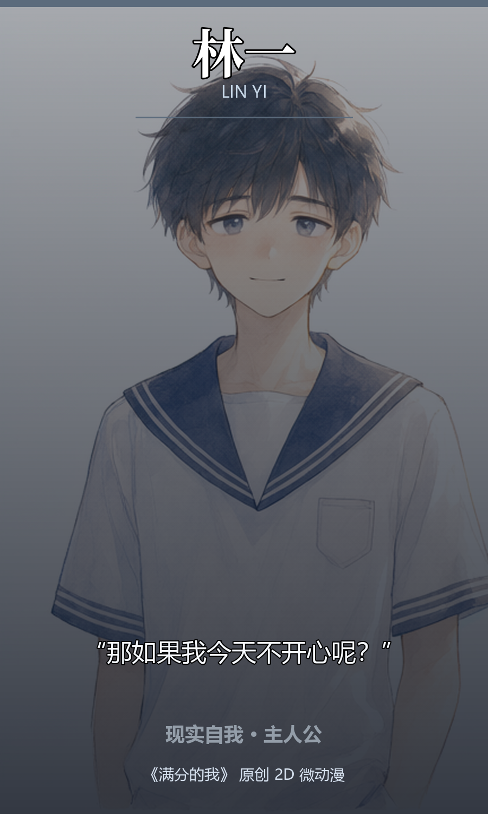

故事梗概STORY
高一男生林一，是班里「人缘很好、成绩不错」的那类人。社交平台上，他的照片被无数个赞包围，所有人都说他「过得真好」；可镜头拉近，他独自坐在洗手间隔间里，屏幕里是阳光灿烂的自拍，脸上却没有笑。
他把考砸的试卷塞进书包，删掉照片里疲惫的表情，对着镜头练习笑容——每一个真实的瞬间，都被剪成一张完美的照片。由「想被喜欢」的渴望凝聚而成的虚拟自我「一林」不断提醒他：别让他们看出你不开心。
他越来越努力，却越来越不喜欢自己。直到朋友陈晓一句「那你不用在我面前装没事」，让他第一次发现——真实的自己，也可以被接纳。
你可以努力成为更好的自己，但不必先变得完美，才配得到认可。
